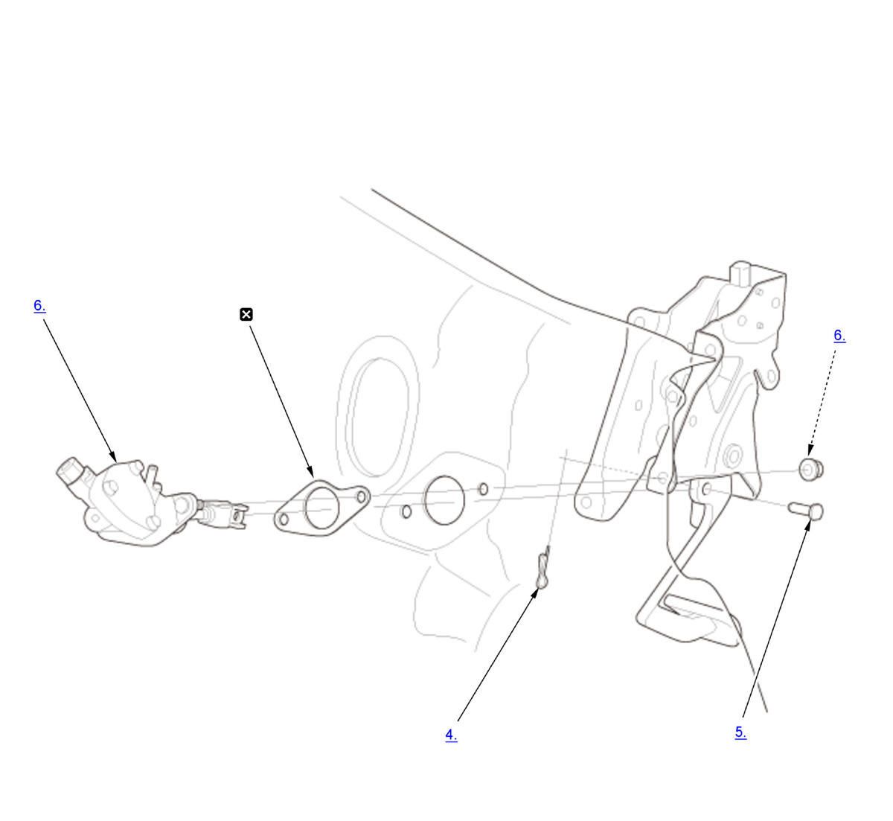

Clutch Master Cylinder Removal and Installation (M/T): Removal: Procedure
WARNING: This page is about a different variant/trim than selected.
NOTE:
Numbered call-outs in figure pertain to list numbers in following procedure.

Courtesy of HONDA, U.S.A., INC. |
Replace |
- 12 Volt Battery - Remove
- 12 Volt Battery Base - Remove
- Clutch Hose and Line - Disconnect
- Lock Pin - Remove
- Clevis Pin - Remove
- Clutch Master Cylinder - Remove